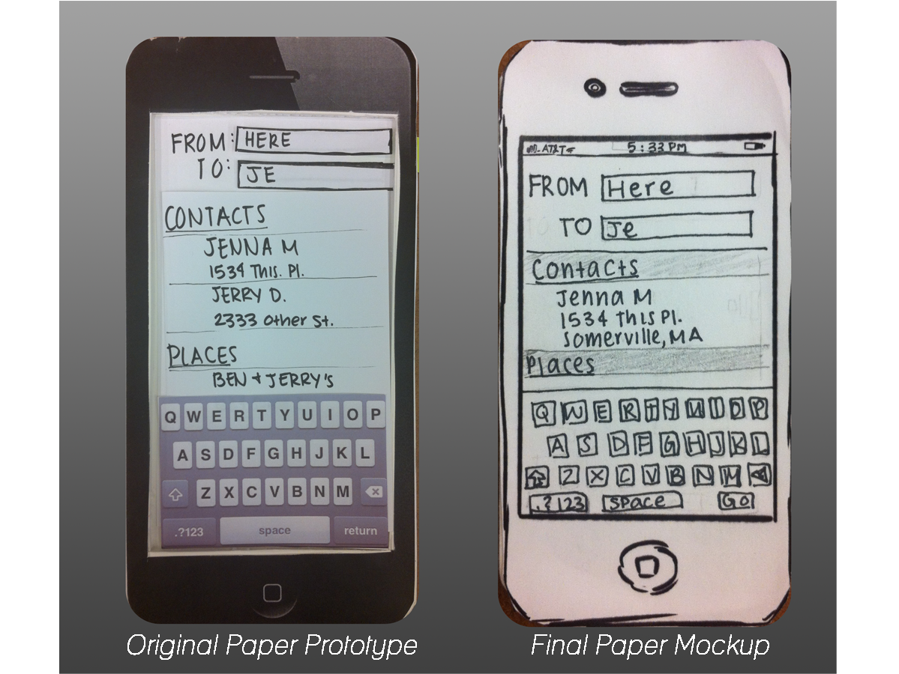
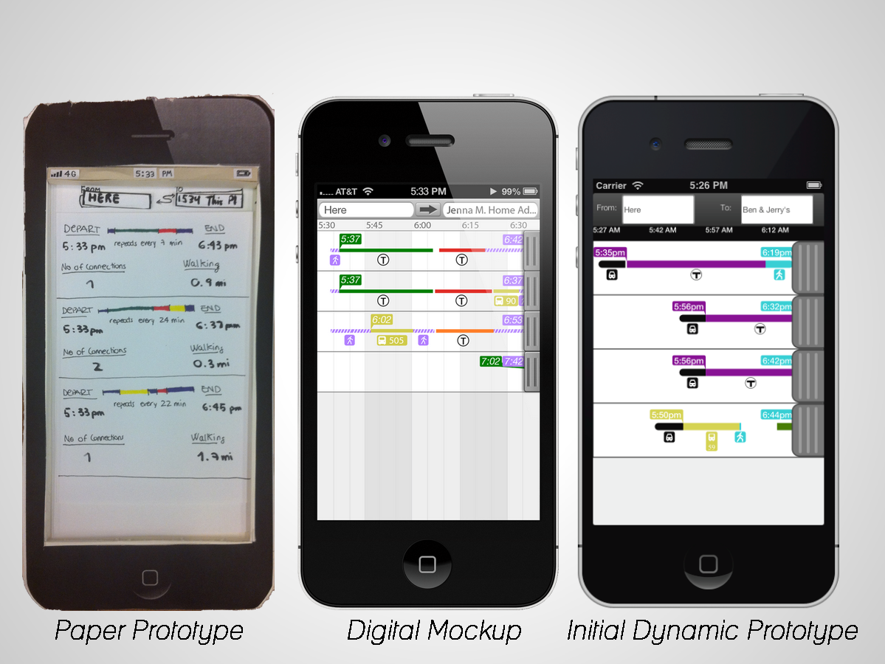
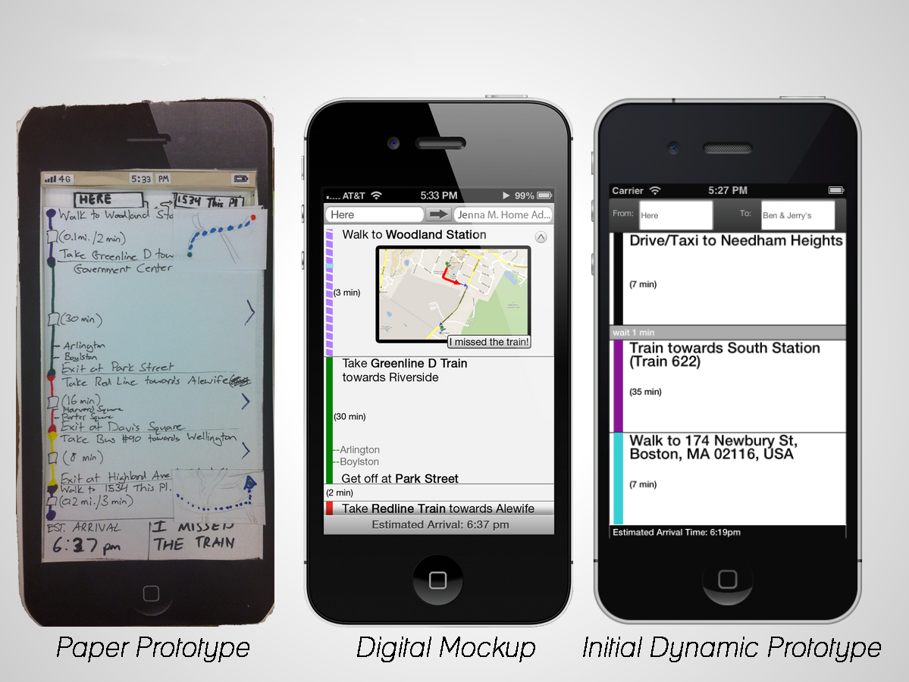
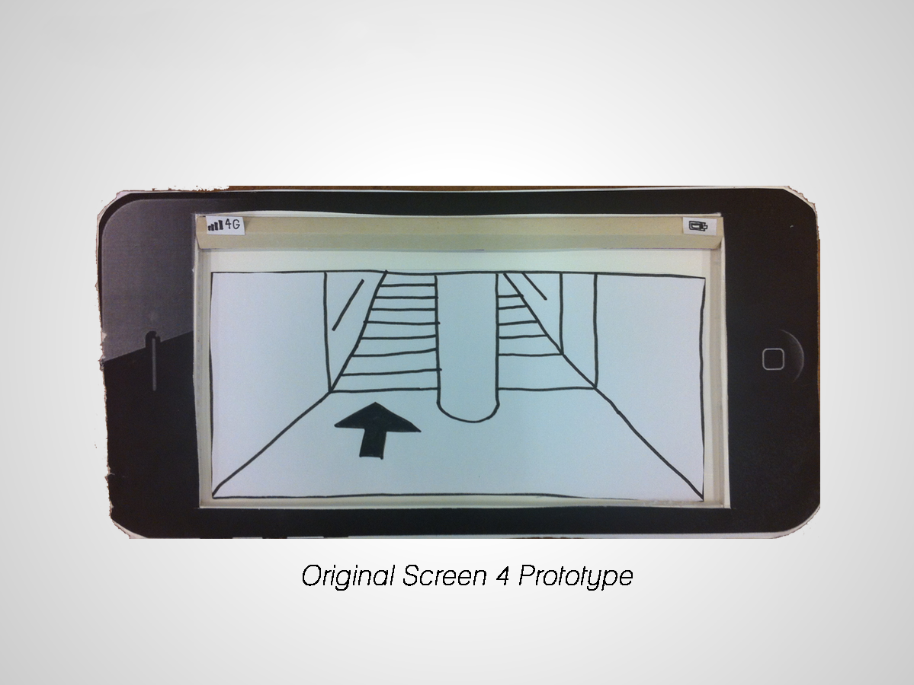

Changes From Prototype
Based on the results of our usability testing, it was necessary to change and refine our original design idea. For the purpose of comparison, we have presented these changes by screen number
Screen 1
Screen 1 remained largely the same - the majority of the feedback we received from user testing was confusion about which objects were "clickable". This concern is most likely related to the nature of the paper prototype rather than a flaw in the design itself.

Screen 2
The biggest decision we had to make before iterating on our prototype was whether to make the screen for comparing routes primarily graphical or textual. We decided that the graphical view was superior to the textual view for 3 key reasons:
- Users consistently pointed out that the number of connections is not as important as the type of connections – multiple train-to-train connections are preferred to even a single train-to-bus connection. The textual view cannot represent this information as clearly and concisely as the graphical view.
- Some information such as walking distance is better compared visually rather than numerically. "0.3 mi" is just a number. However, seeing that a route requires walking for 5 minutes, taking a train, and then walking for 10 minutes provides users with a very clear idea of how much walking is involved. Similarly, testers found it difficult to compare route durations and departure times by comparing the relative size of multiple times; presenting this information spatially was an important decision.
- Our original concept for the graphical view had very little text for the sake of preventing clutter, but we decided that certain pieces of information could be made clear without making the interface hard to read. For example, our persona Peter doesn't need to compare different route options since he already knows his way, but he is deeply concerned with checking when trains leave and arrive. In our refined graphical view, he can immediately see when the journey starts and ends, just like in the textual view. As an added bonus, in order to look at later departure times, he only needs to scrub the time-bar at the top of the display, a much quicker interaction than tapping times and manually changing them.
- At first we were concerned that the graphical view would lose much of the functionality of the textual view (such as being able to manually set the departure/arrival times), but we feel as if the current design of the graphical view addresses this (being able to scroll to view later times, for example). We also went back to our personas and thought about what they would need from a graphical view to help them complete their tasks. This did not lead to any fundamental changes, but made sure that we had fully thought through the interaction and better justify our design choices.
The biggest challenge with the graphical view is being able to present all of the important information on such a small screen while limiting clutter, keeping text readable, and making touch targets large enough.
We also thought more about the mental model we were building for our users, specifically regarding the connection between screen 2 and screen 3. We developed "tabs" for each route: they can be tapped like a traditional button to summon the detailed route instructions, but will slide across the screen to suggest to the user that swiping on an individual route will achieve the same result. Similarly, swiping in the opposite direction on screen 3 will return the user to the screen 2.

Screen 3
Three major changes have been made to this page:
- Maps are integrated into relevant steps (e.g. walking directions). Users praised having this information immediately presented, rather than having to “click for more”.
- The "I missed the train" button has been moved from the bottom of the screen to whatever step the user is currently in. User testing showed that users were not sure whether the button could only be pressed at the end of the journey or what would happen if they pressed it. We believe this is because most users are not thinking about what to do if they miss their train until they have actually missed it, so the button does not fit into their existing mental model. To reduce this confusion, the button will only be available in appropriate steps (i.e. steps that are followed by a transit line). If the application believes the user has missed their train (based on GPS and timing data), the button will glow to suggest that the user should press it.
- The vertical bar on the left has been refined slightly. Whilst users liked having segment lengths that were scaled based on the time each segment represented, this caused problems in displaying information concisely. Thus, we decided to make each segment the same size, maximizing the amount of information that can be displayed on the screen. Also, connections and transfers are now represented as a gap displaying the amount of time the user has to wait.

Screen 4
User feedback suggested that the "street-view" screen would be at best unhelpful or at worst confusing. The underlying criticism was that trying to compare a picture on a phone with the surrounding environment is no easier than looking for signs (it is worth pointing out that this assumes stations are well-signed, something that might be worth investigating at a later date). Given this feedback, we have decided to remove Screen 4 from our design.
